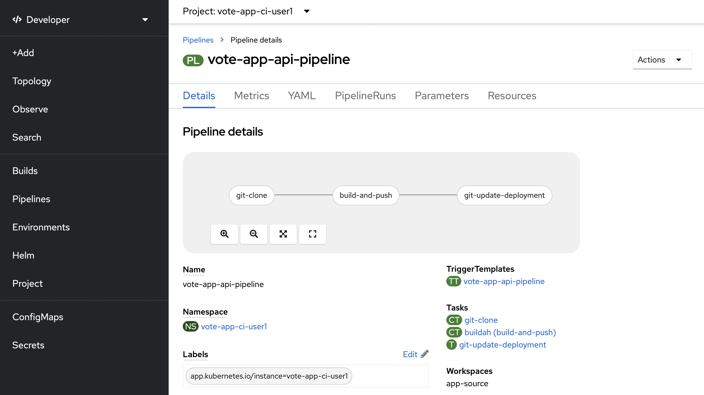
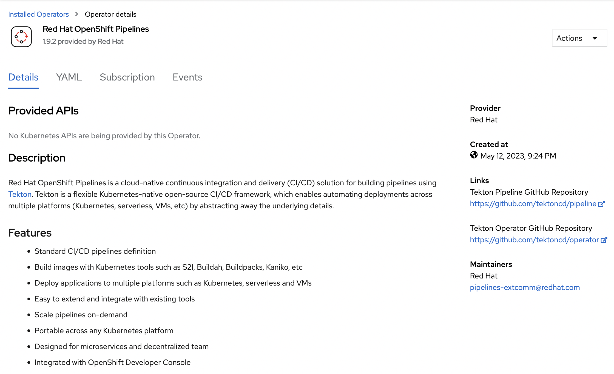
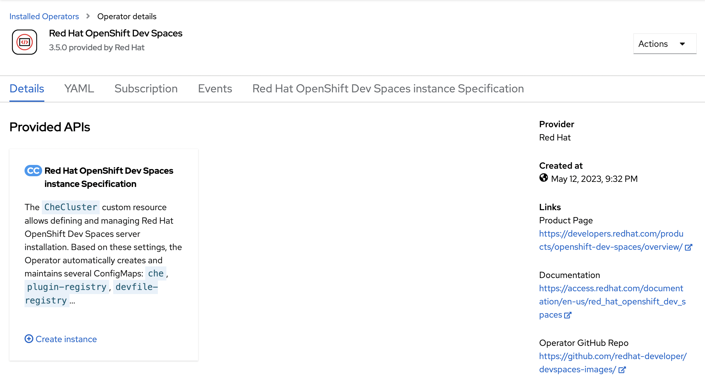
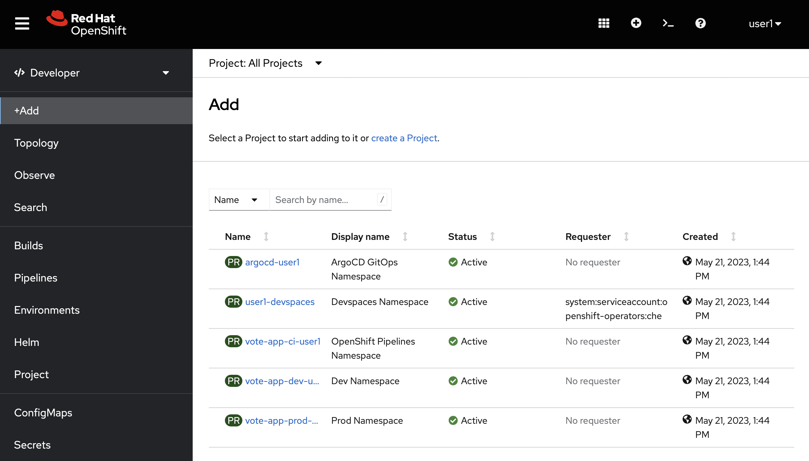
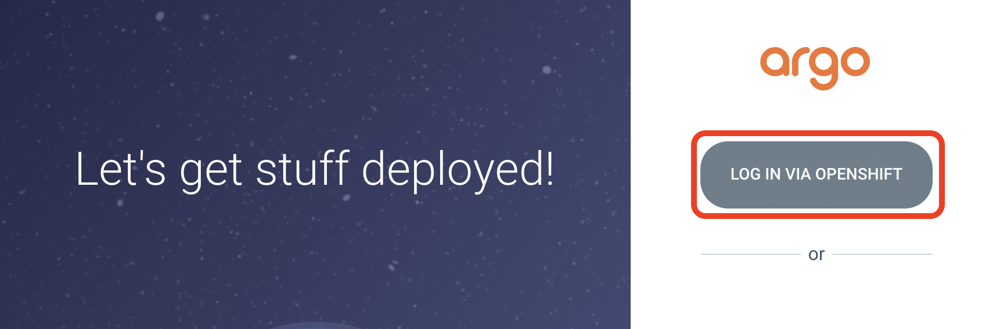
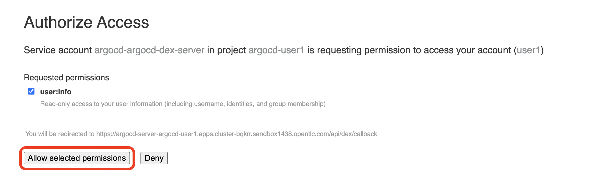
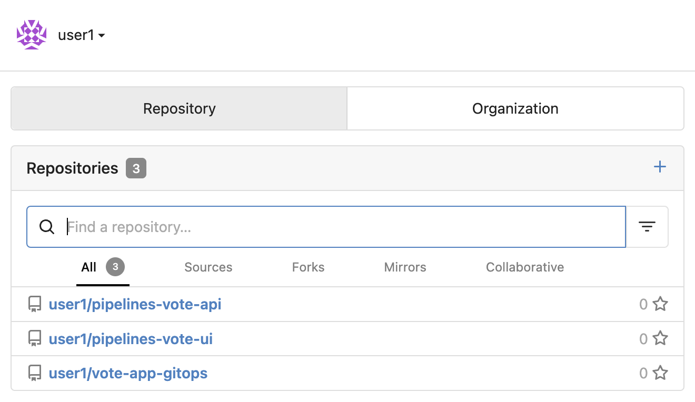

Workshop Overview - Setup In this section, we’ll look at the setup of the OpenShift cluster we’re using for today’s lab. This includes the OpenShift Operators that have been installed and the projects that have been created for you. We’ll also look at the tools we’ll be using throughout the lab, including OpenShift Dev Spaces, OpenShift Pipelines, and OpenShift GitOps. Red Hat Developer Tools Let’s look at some of the inner and outer loop developer flow tools Red Hat provides. This includes tools for building, testing, deploying, and running applications. These tools are integrated and work together to provide a seamless developer experience. We can break these tools down as shown below. Inner Loop: OpenShift Dev Spaces OpenShift Dev Spaces is a cloud and container-native development environment that provides a fast, secure, and zero-configuration development environment for Kubernetes and OpenShift. It allows developers to bootstrap their development environment and start coding quickly. Outer Loop: OpenShift Pipelines OpenShift Pipelines is a cloud-native, continuous integration and delivery (CI/CD) solution for building pipelines using Tekton. Tekton is a flexible, Kubernetes-native, open-source CI/CD framework that enables automating deployments across multiple platforms (Kubernetes, serverless, VMs, etc.) by abstracting away the underlying implementation details.  Outer Loop: OpenShift GitOps OpenShift GitOps is a GitOps solution for OpenShift that provides a declarative, GitOps-centric approach to managing applications and their delivery based on Argo CD. It provides a set of tools that allow developers to manage the application lifecycle, including deploying, updating, and deleting applications using Git as the source of truth. Environment Setup Everything has already been pre-installed on your cluster, so there’s no need to do anything here. This is just for reference. Throughout this lab, you’ll have your own account on an OpenShift 4.12 cluster. To save time, this cluster has been pre-configured with the below OpenShift Operators. You can think of Operators as add-ons to an OpenShift or Kubernetes cluster that provide extended features/capabilities. We’ve attached screenshots of each operator’s details page, as only the cluster admin account can view these details. Operator: OpenShift Pipelines We’ll use OpenShift Pipelines to pull our code from Git, build it, and update the Git repository with the new image tag.  Operator: OpenShift GitOps We’ll use OpenShift GitOps to deploy our application to the cluster and manage the application lifecycle. Our two projects, vote-app-dev-%USERID% and vote-app-prod-%USERID%, will be managed by ArgoCD, and we’ll be able to demonstrate high availability using GitOps. Operator: OpenShift Dev Spaces We’ll use OpenShift Dev Spaces to bootstrap our development environment quickly and start coding. We’ll be able to make changes to our code and see them reflected in the cluster in real time and commit our changes to Git.  Operator: OpenShift Web Terminal Finally, the Web Terminal is a web-based terminal for OpenShift. It allows users to access a terminal in a pod from the OpenShift Web Console, and it’ll help us work within our cluster without having to download the OpenShift CLI (oc). Lab Checks OpenShift First, let’s ensure we’re logged into the OpenShift cluster. You can access the OpenShift Console from the Lab Guides, or you can visit the OpenShift Console using this OpenShift Web Console Link. You’ll be prompted to log in to OpenShift, and you can use the OpenShift login button to do so. As a reference, here are your credentials: Username: %USERID% Password: openshift  Once you’re logged in, you’ll be at the OpenShift dashboard. If you aren’t already, you can navigate to the Developer perspective, where we’ll be spending most of our time. Argo CD Let’s look at Argo CD, a declarative, GitOps continuous delivery tool for Kubernetes provided in the OpenShift GitOps Operator. While you can access Argo CD from the Lab Guides or by using this Argo CD link. You can also visit Argo CD from your OpenShift cluster. Within the Developer perspective, navigate to the argocd-%USERID% project, and visit the Topology page. From your project’s Topology page, click on the Argo CD route to visit the Argo CD dashboard. You’ll be prompted to log in to Argo CD, and you can use the OpenShift login button to do so.  As a reference, here are your credentials: Username: %USERID% Password: openshift You’ll need to authorize the Argo CD application to access your OpenShift cluster. Click the Allow selected permissions button to authorize Argo CD to access your OpenShift cluster.  Now, you’ll be directed to the Argo CD dashboard. Vote App Repository You can access Gitea from the Lab Guides, or you can visit Gitea using this Gitea Link. You’ll also have access to multiple Gitea repositories that contain the Vote App source code and Argo CD application manifests. As a reference, here are your credentials: Username: %USERID% Password: openshift  Once logged in, you can access the following Vote App source repositories: Vote App UI Frontend Vote App API Backend We also have a repository that contains the ArgoCD application manifests for the Vote App. Vote App GitOps Next steps Your environment is now ready to go! The cluster has been pre-configured with the necessary OpenShift Operators, and you have access to Argo CD and the necessary Git repositories. From here, we can wrap up the introduction and begin our lab! Inner vs Outer Loop Introduction